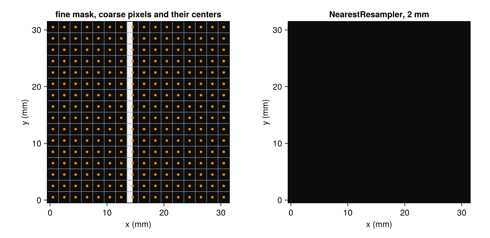
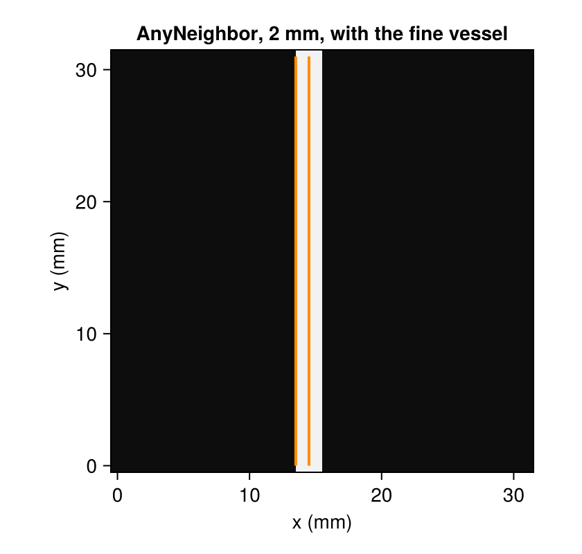

Write a Resampler
resample takes the resampler as its first argument. A resampler is a type of its own, so a package adds one by defining a type and a method for it, without changing TomoImages. This guide writes a resampler for masks that keeps thin structures, which nearest-neighbor resampling can lose on a coarser grid. Grids, Spaces and Transforms explains how resampling works.
using TomoImages, CairoMakieThe problem
A mask of a vessel one pixel wide (a pixel is a 2D voxel), on a grid of 1 mm:
g = GridGeometry((32, 32); spacing=(1.0, 1.0), origin=(0.0, 0.0))
vessel = TomoImage([i == 15 for i in 1:32, j in 1:32], g);On a grid of 2 mm, the center of every coarse pixel lies halfway between two columns of fine pixels. NearestResampler reads one of them; here, with positions exactly halfway, it rounds to the even index and never reads the column of the vessel: the coarse mask is empty.
coarse = GridGeometry((16, 16); spacing=(2.0, 2.0), origin=(0.5, 0.5))
nearest = resample(NearestResampler(), vessel, coarse)
count(parent(nearest))0The figure shows why. The vessel (white) is the fine column at x = 14 mm. The coarse pixels (gray edges) have their centers in orange; the two coarse pixels next to the vessel have their centers at x = 12.5 and 14.5 mm, halfway between two fine columns. Nearest-neighbor resampling reads the columns at x = 13 and x = 15 there, both next to the vessel:

The resampler
AnyNeighbor marks an output pixel if any of the input pixels around its position is marked. A resampler implements TomoImages.resample!. It fills the output array out: for every output index j, imap(j) is the fractional index of the same position in the input. Both are ordered as the index axes of the geometry, which for this resampler must also be the order of the array dimensions. Positions farther than half a voxel outside the input get the keyword fillvalue, which resample always passes; inside, as for the built-in resamplers, the outer half voxel takes the edge.
TomoImages.supports states which images it takes: Bool data in an Array, only grid dimensions, in the order of the index axes. TomoImages.resample_eltype states that it returns Bool:
struct AnyNeighbor <: AbstractResampler end
function TomoImages.supports(::AnyNeighbor, img)
eltype(img) == Bool && parent(img) isa Array && TomoImages.griddims(img) == ntuple(identity, ndims(img))
end
TomoImages.resample_eltype(::AnyNeighbor, ::Type) = Bool
function TomoImages.resample!(::AnyNeighbor, out, img, imap; fillvalue)
data = parent(img)
n = size(data)
for j in CartesianIndices(out)
p = imap(Tuple(j))
if all(k -> 0.5 <= p[k] <= n[k] + 0.5, eachindex(p))
lo = ntuple(k -> clamp(floor(Int, p[k]), 1, n[k]), length(n))
hi = ntuple(k -> clamp(floor(Int, p[k]) + 1, 1, n[k]), length(n))
out[j] = any(data[CartesianIndex(lo):CartesianIndex(hi)])
else
out[j] = fillvalue
end
end
out
endThe same call as with the built-in resamplers; every coarse pixel along the vessel is marked:
mask = resample(AnyNeighbor(), vessel, coarse)
count(parent(mask)), eltype(mask)(16, Bool)
The marked coarse pixels form one column, 2 mm wide, which contains the vessel (orange outline).
For an image it does not support, resample refuses before the call:
resample(AnyNeighbor(), TomoImage(rand(32, 32), g), coarse)ArgumentError: AnyNeighbor does not support 32×32 TomoImage{Float64} in DefaultSpace with dims x1, x2Limits
AnyNeighbor reads the 2 × 2 (in 3D 2 × 2 × 2) input voxels around a position. That covers every input voxel of an output voxel only on grids at most twice as coarse; on coarser grids it misses thin structures again. At a voxel center it reads that voxel and its neighbors in the positive directions, so a mask grows by one voxel to that side. A resampler for any coarser grid reads all input voxels within the extent of the output voxel instead, which the index map gives as well: the columns of imap.M are the steps between neighboring output voxels in input voxels.
The index map imap contains the two geometries and the transform, if any, so a resampler never handles spaces or directions. For a GPU version, the loop becomes a KernelAbstractions kernel on the backend of out (KernelAbstractions.get_backend(out)); the map is isbits and is passed as an argument (see TomoImages.IndexMap), and its element type is that of the data, at least Float32. The built-in kernel in src/resampling/kernels.jl is a model.
This page was generated using Literate.jl.